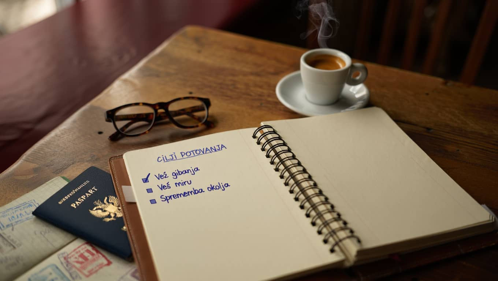

Kako načrtovati oddih brez stresa in brez občutka, da ves čas nekaj zamujate

Veliko ljudi naredi isto napako že pri prvem koraku. Namesto da bi najprej razmislili, kaj od oddiha sploh želijo, začnejo z iskanjem najcenejših letov, najbolj gledanih lokacij ali najbolj všečnih fotografij. Posledica je plan, ki na papirju deluje odlično, v praksi pa povzroči nenehno hitenje. Dober oddih ni seznam opravljenih točk. Dober oddih je ritem, v katerem ima telo dovolj časa, da se umiri, glava pa dovolj prostora, da ni ves čas v logističnem načinu.
Smiselno je začeti pri preprostem vprašanju: ali želite na potovanju več gibanja, več miru ali več spremembe okolja. To je bolj uporabno kot splošno vprašanje, kam iti. Če potrebujete počitek, nima smisla rezervirati poti s tremi prestopi, šestimi ogledi in vsakodnevnim menjavanjem nastanitve. Če vas polni aktivnost, tudi najlepši hotel ne bo rešil občutka, da ste obstali na mestu. Zato je prvi filter namen potovanja, šele nato pride izbira destinacije, prevoza in nastanitve.
Druga pomembna stvar je količina prostega časa v načrtu. Ljudje imajo pogosto občutek, da morajo vsak dan zapolniti od jutra do večera, sicer nekaj izgubljajo. V resnici se največ utrujenosti zgodi ravno zaradi tega. Pametneje je načrtovati največ eno glavno aktivnost na dan in okoli nje pustiti dovolj prostora za nepredvidene zamike, kosilo brez naglice in spontano spremembo plana. Prav ta prazni prostor največkrat loči naporen dopust od res dobrega oddiha.
Koristno je tudi, da si vnaprej določite nekaj jasnih omejitev. Koliko premikov v enem tednu še sprejmete. Koliko časa ste pripravljeni preživeti v avtu. Koliko hoje vam res ustreza. Ko to veste, hitreje izločite slabe možnosti. Bolj ko ste pošteni do svojega dejanskega tempa, manjša je možnost, da boste na polovici poti utrujeni, razdraženi ali razočarani. Dobro načrtovanje ni toga disciplina, ampak način, da si ustvarite več svobode med samim potovanjem.
Še zadnji korak pa je zelo prizemljen: uredite tri osnovne stvari pred odhodom. Prvo je prtljaga brez nepotrebne navlake. Drugo je realen dnevni okvir. Tretje pa je odločitev, da vam ne bo treba videti vsega. Ta zadnja je običajno najtežja, a je tudi najbolj koristna. Ko sprejmete, da potovanje ni tekmovanje, se način gibanja, prehranjevanja in počitka povsem spremeni. Takrat oddih končno začne delovati tako, kot bi moral: kot prekinitev rutine, ki vas ne izčrpa še bolj, ampak vas vrne domov v boljšem stanju.